• How can computational design create architectural spaces that evoke specific emotional states through color, light, and form?
• What are the ethical implications of using technology to engineer emotional atmospheres in built environments?
• How do immersive color-light environments affect human perception and emotional experience?
• What new human-environment relationships emerge when spaces become emotionally responsive?
• How can affective architecture address mental health and urban wellbeing in digital societies?
Sensing Space: Color, Form, and Light in Affective Architecture
Contents
Research questions
Keywords
• Affective Architecture
• Emotional Atmospheres
• Computational Color Design
• Sensory Immersion
• Spatial Psychology
• Responsive Environments
• Emotional Atmospheres
• Computational Color Design
• Sensory Immersion
• Spatial Psychology
• Responsive Environments
3 Intersecting Fields
Computational Design & Interactive Media
Using code and digital tools to prototype and visualize emotional spatial experiences, including real-time responsive systems, generative design algorithms, and interactive installations that adapt to human presence and behavior.
Color Theory & Psychology
Investigating the emotional and psychological impact of color and light on human perception and mood, drawing from neuroscience, environmental psychology, and phenomenological studies of spatial experience.
Spatial & Experiential Architecture
Creating physical and virtual environments that evoke affective responses through form, color, and light, bridging the gap between digital simulation and embodied experience in architectural space.
Historical Lineage
1919-1933
Bauhaus Color Theory
Johannes Itten's color theory, Josef Albers' color interactions, and the systematic exploration of color as a fundamental design element in architecture and art.
1920s-1960s
Modernist Color Architecture
Le Corbusier's polychromy architecture, De Stijl color theory, and the integration of color as a structural and spatial element in modernist buildings.
1950s-1970s
Op Art & Kinetic Art
Bridget Riley's optical illusions, Victor Vasarely's geometric abstractions, and the GRAV group's investigations into dynamic color interactions and viewer perception.
1960s-1980s
Light and Space Movement
James Turrell's perceptual installations, Robert Irwin's environmental works, and Dan Flavin's fluorescent light sculptures that transformed space through light and color.
1970s-2000s
Phenomenological Architecture
Juhani Pallasmaa's embodied experience theories, Steven Holl's phenomenological approach to light and space, and Peter Zumthor's atmospheric architecture emphasizing sensory perception.
1990s-Present
Digital Color & Interactive Media
Early computational art experiments, digital color theory, and the emergence of interactive installations that respond to human presence and behavior.
2000s-Present
Contemporary Computational Art
Refik Anadol's AI-driven environments, teamLab's immersive installations, and the rise of machine learning in creating responsive emotional landscapes.
My Community of Practice
This project is situated among a vibrant community of artists, designers, and computational practitioners who explore the intersection of color, light, form, and emotion in immersive environments. These creators use computational tools and spatial design to shape affective atmospheres that engage users sensorially and emotionally. Key figures include:
• Liz West: Known for her striking color-saturated light installations such as Our Colour Reflection and Colour Transfer, West's work uses vivid colored light to create powerful emotional experiences and heighten sensory awareness. Her installations emphasize how color can transform perception within a space, inspiring my focus on emotional color fields. I position my work as a computational extension of her phenomenological approach, using digital tools to create more responsive and adaptive color environments.
• James Turrell: A seminal figure in light and space art, Turrell designs immersive perceptual experiences using carefully controlled light and color, exemplified by works like Aten Reign and Ganzfeld. His architectural voids manipulate viewers' sense of space and emotion, demonstrating the profound effect of light and color on atmosphere. My work builds upon his perceptual investigations but introduces computational responsiveness and emotional modeling to create more dynamic, user-adaptive experiences.
• Olafur Eliasson: Blending phenomenology and environmental art, Eliasson's projects such as Room for One Colour and Your Uncertain Shadow use shifting monochromatic light and spatial interventions to explore perception and mood. His hybrid approach combining computation, architecture, and sensory experience informs my project's conceptual framework. I extend his environmental consciousness by incorporating real-time emotional feedback and adaptive color systems.
• Jenny Sabin Studio: This design practice creates responsive, data-driven architectural environments such as Lumen and Nanotecture, which use textiles, light, and computational design to produce changing emotional atmospheres. Their work demonstrates the potential for materials and technology to interact dynamically with human emotion. My project shares their interest in responsive environments but focuses specifically on emotional color design rather than structural responsiveness.
• Refik Anadol: Using machine learning and large-scale data visualization, Anadol's immersive projections like Melting Memories transform architectural spaces into dynamic emotional landscapes, emphasizing the role of data as a medium for affective experience. While I admire his technical sophistication, my work critiques the passive consumption of AI-generated content by creating more interactive, user-controlled emotional environments that prioritize human agency over algorithmic determinism.
 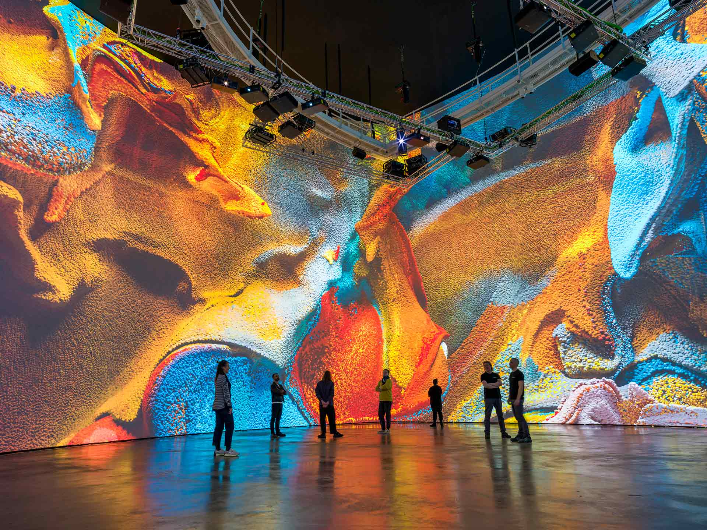
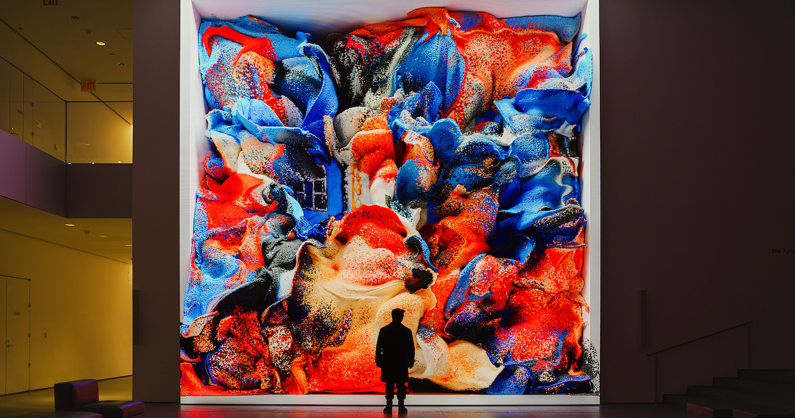
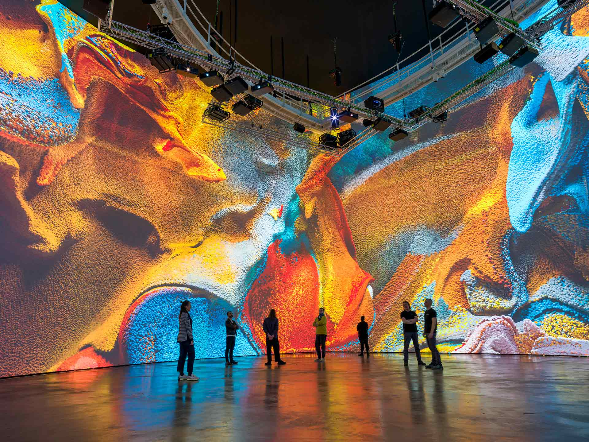
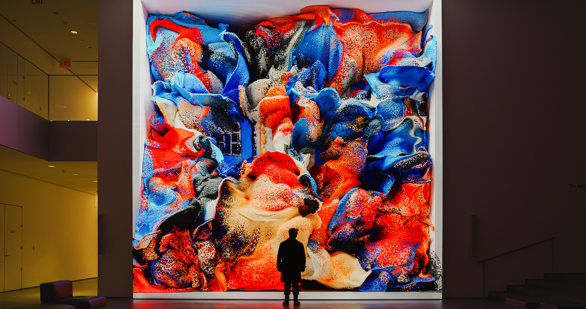
My project reorients from my precedent study on AI excavation by focusing more directly on embodied emotional atmospheres shaped through color, light, and form, using computational tools to create spatial and experiential designs. While it shares audiences with these practitioners, it also aims to contribute to architectural and design communities invested in affective computing and sensory environmental design. The audience for my project extends beyond the art world to include architects, urban planners, and mental health professionals interested in the therapeutic potential of emotionally intelligent spaces.
• Liz West: Known for her striking color-saturated light installations such as Our Colour Reflection and Colour Transfer, West's work uses vivid colored light to create powerful emotional experiences and heighten sensory awareness. Her installations emphasize how color can transform perception within a space, inspiring my focus on emotional color fields. I position my work as a computational extension of her phenomenological approach, using digital tools to create more responsive and adaptive color environments.
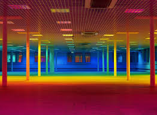
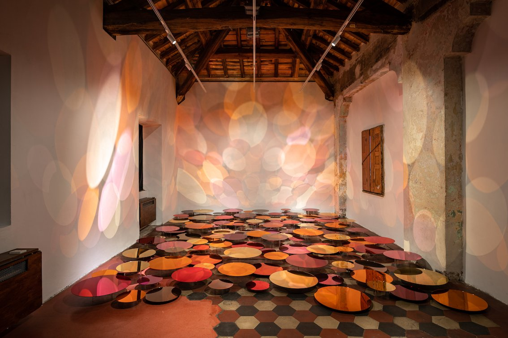
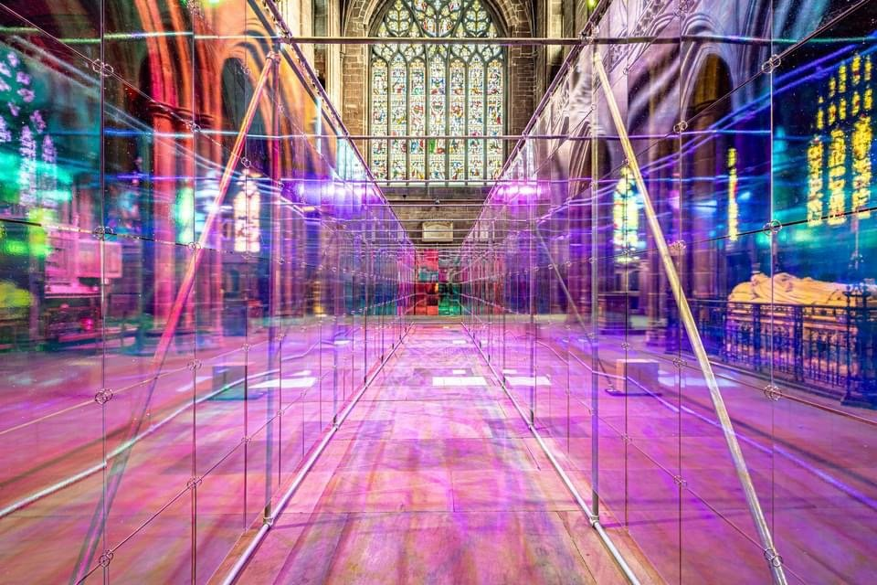
• James Turrell: A seminal figure in light and space art, Turrell designs immersive perceptual experiences using carefully controlled light and color, exemplified by works like Aten Reign and Ganzfeld. His architectural voids manipulate viewers' sense of space and emotion, demonstrating the profound effect of light and color on atmosphere. My work builds upon his perceptual investigations but introduces computational responsiveness and emotional modeling to create more dynamic, user-adaptive experiences.
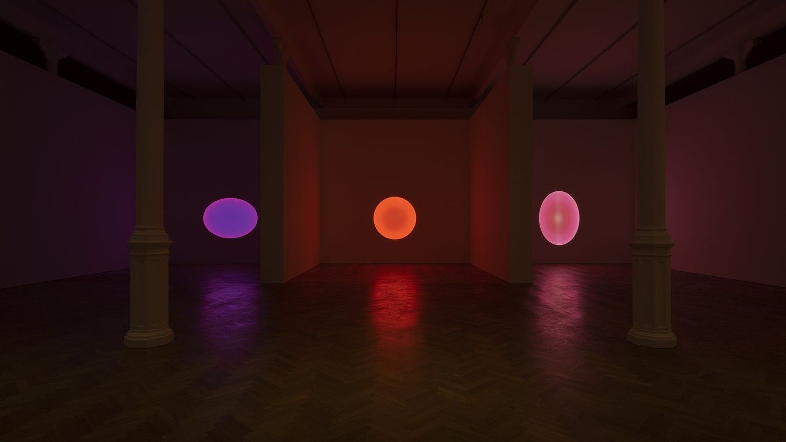
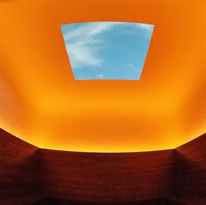
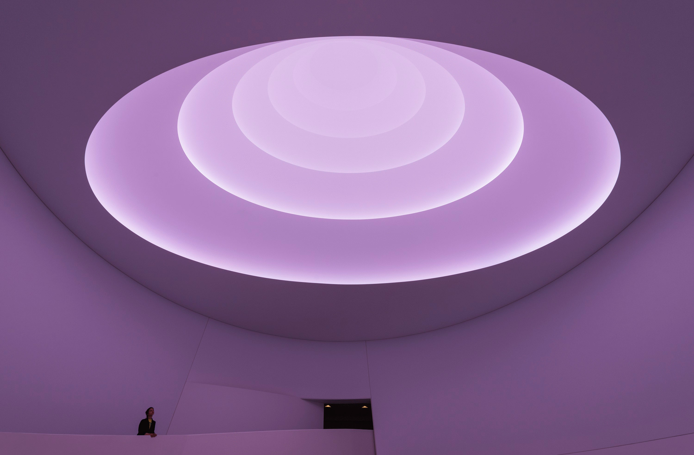
• Olafur Eliasson: Blending phenomenology and environmental art, Eliasson's projects such as Room for One Colour and Your Uncertain Shadow use shifting monochromatic light and spatial interventions to explore perception and mood. His hybrid approach combining computation, architecture, and sensory experience informs my project's conceptual framework. I extend his environmental consciousness by incorporating real-time emotional feedback and adaptive color systems.
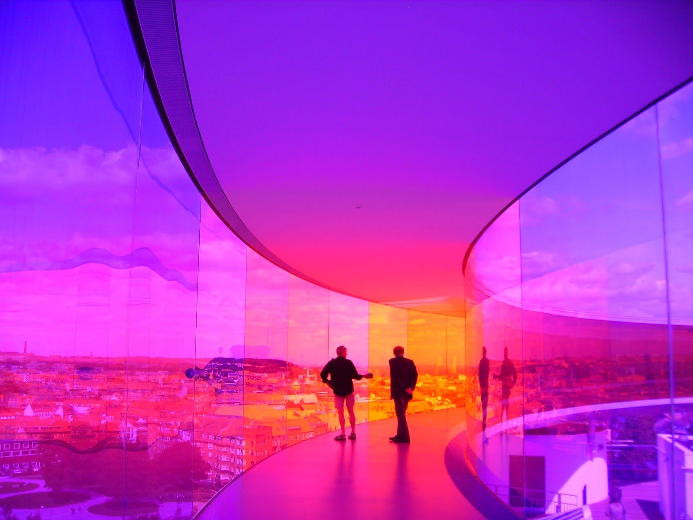
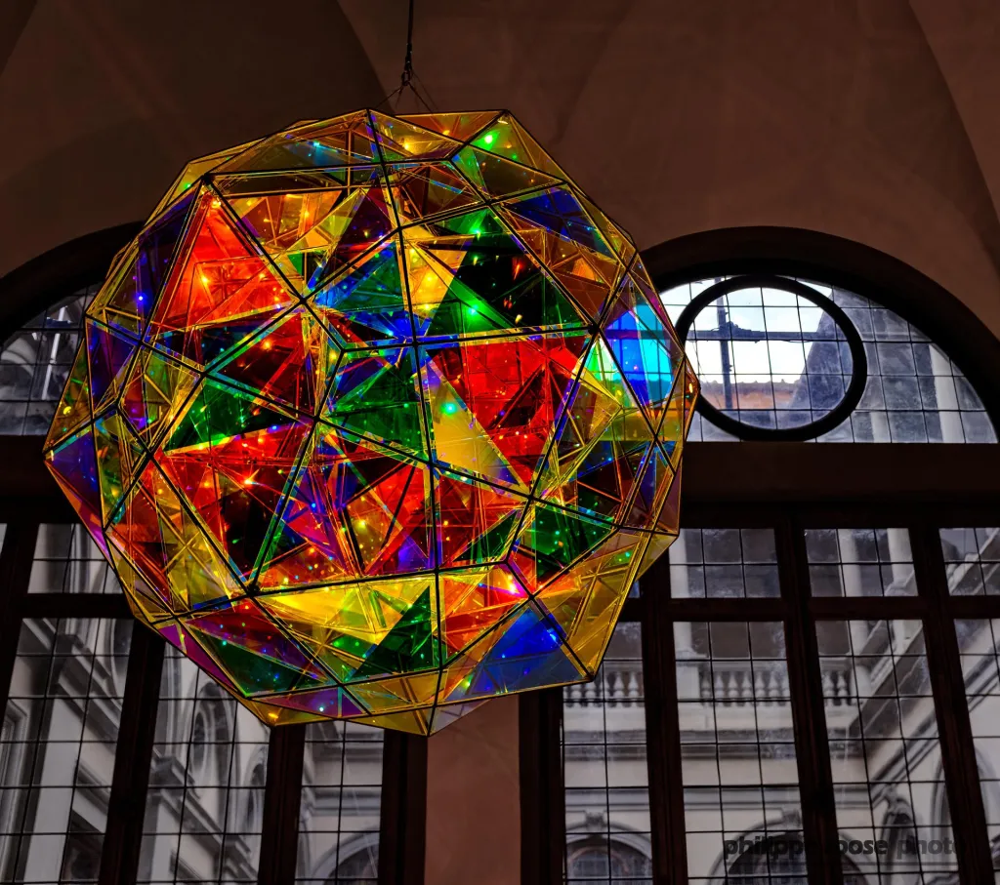
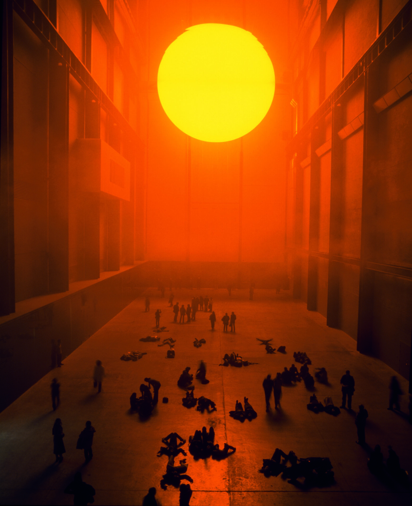
• Jenny Sabin Studio: This design practice creates responsive, data-driven architectural environments such as Lumen and Nanotecture, which use textiles, light, and computational design to produce changing emotional atmospheres. Their work demonstrates the potential for materials and technology to interact dynamically with human emotion. My project shares their interest in responsive environments but focuses specifically on emotional color design rather than structural responsiveness.
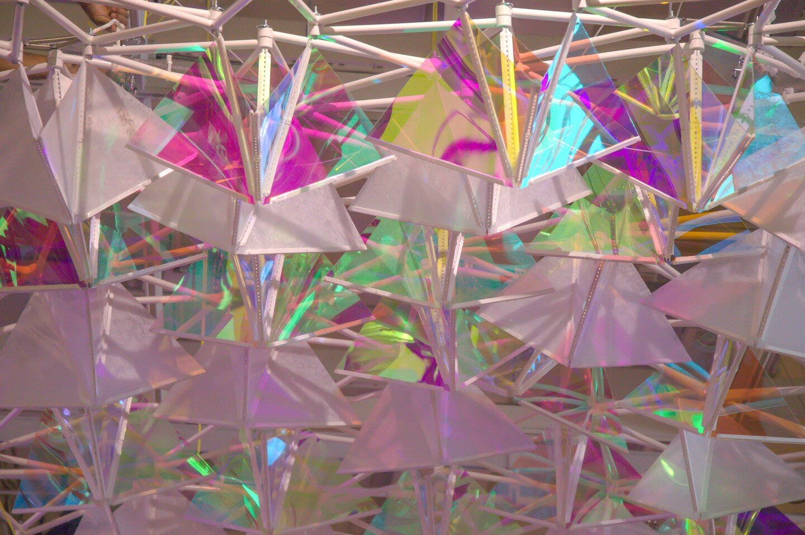
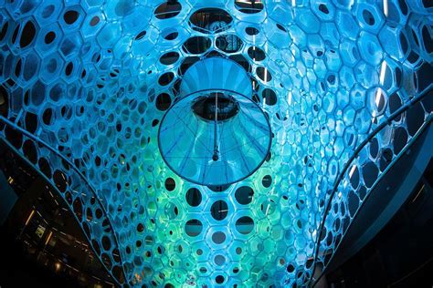
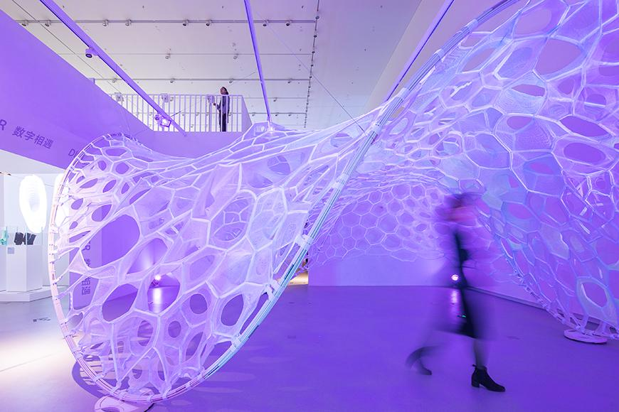
• Refik Anadol: Using machine learning and large-scale data visualization, Anadol's immersive projections like Melting Memories transform architectural spaces into dynamic emotional landscapes, emphasizing the role of data as a medium for affective experience. While I admire his technical sophistication, my work critiques the passive consumption of AI-generated content by creating more interactive, user-controlled emotional environments that prioritize human agency over algorithmic determinism.
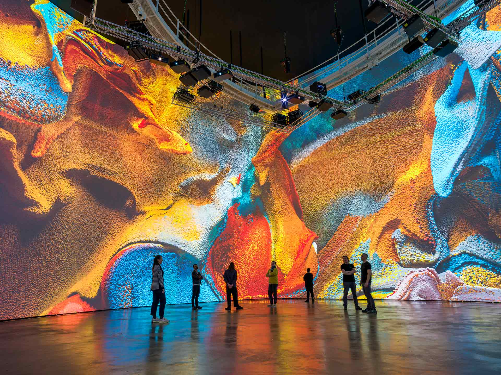
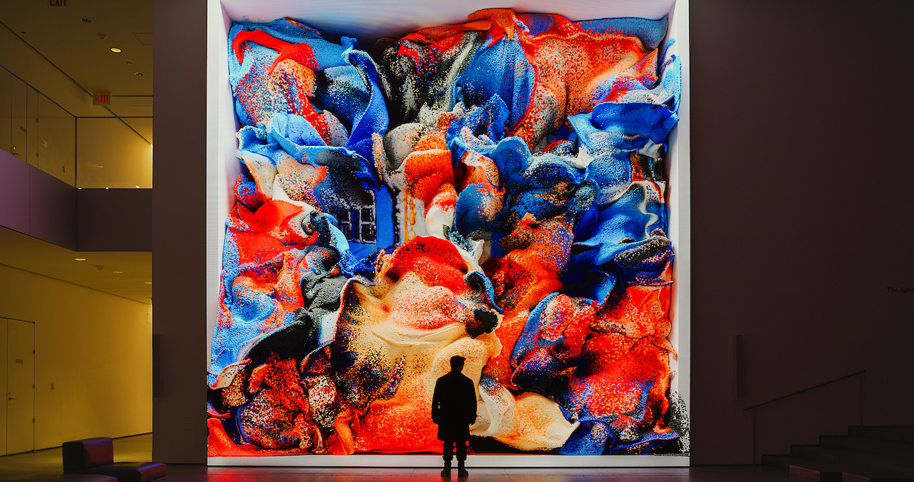
My project reorients from my precedent study on AI excavation by focusing more directly on embodied emotional atmospheres shaped through color, light, and form, using computational tools to create spatial and experiential designs. While it shares audiences with these practitioners, it also aims to contribute to architectural and design communities invested in affective computing and sensory environmental design. The audience for my project extends beyond the art world to include architects, urban planners, and mental health professionals interested in the therapeutic potential of emotionally intelligent spaces.
Situated Technology
I engage with computational design tools such as p5.js, Three.js, and D3.js to prototype and simulate affective atmospheres, situating technology as both a medium and method for exploring emotional architectural space. This approach aligns with the CDP theme of situated technology by treating computation not as a universal solution but as a contextual tool embedded within specific spatial and emotional conditions. The technology serves the human experience rather than dictating it, creating responsive environments that adapt to individual emotional states and collective atmospheres. This challenges the dominant paradigm of technology-driven design by prioritizing emotional intelligence and human agency in computational systems.
Methods
• Software & Computational: p5.js for prototyping emotional interactions and real-time color systems; Three.js for 3D spatial simulations and immersive environments; D3.js for data visualization of emotional patterns; Processing for generative color algorithms.
• Data & Modeling: Emotion models like the Circumplex Model and Plutchik's Wheel to inform spatial color and light design; biometric data collection for emotional response mapping; machine learning for pattern recognition in emotional color preferences.
• Qualitative Research: User interviews and feedback sessions to capture affective responses; phenomenological analysis of spatial experience; ethnographic observation of emotional behavior in designed environments.
• Physical & Material: Printed visualizations and QR-linked immersive environments; physical color samples and material testing; scale models and prototypes for spatial validation.
• Design & Aesthetic: Combining color bands, light modulation, and simple geometric forms to create affective zones; iterative design processes informed by user testing; visual language development through digital and analog sketching.
• Data & Modeling: Emotion models like the Circumplex Model and Plutchik's Wheel to inform spatial color and light design; biometric data collection for emotional response mapping; machine learning for pattern recognition in emotional color preferences.
• Qualitative Research: User interviews and feedback sessions to capture affective responses; phenomenological analysis of spatial experience; ethnographic observation of emotional behavior in designed environments.
• Physical & Material: Printed visualizations and QR-linked immersive environments; physical color samples and material testing; scale models and prototypes for spatial validation.
• Design & Aesthetic: Combining color bands, light modulation, and simple geometric forms to create affective zones; iterative design processes informed by user testing; visual language development through digital and analog sketching.
Computational Design Experiments
Throughout the semester, I developed a comprehensive computational experiment that informed my project development:
• Purple Color Experimentation Platform: Developed a comprehensive interactive website exploring the emotional and perceptual qualities of purple through multiple computational approaches. This experiment combines p5.js for interactive color animations, D3.js for data visualization of purple's evolution through time, and Three.js for immersive 3D environments. The platform includes an "Amethyst Light Emergence Network" that visualizes the chemistry and physics of purple coloration, interactive sound machines that respond to purple crystal interactions, and neighborhood explorations that map purple's presence across Manhattan. This work demonstrates my interest in using computational tools to create multi-sensory experiences that explore the emotional and cultural dimensions of color.
• Purple Color Experimentation Platform: Developed a comprehensive interactive website exploring the emotional and perceptual qualities of purple through multiple computational approaches. This experiment combines p5.js for interactive color animations, D3.js for data visualization of purple's evolution through time, and Three.js for immersive 3D environments. The platform includes an "Amethyst Light Emergence Network" that visualizes the chemistry and physics of purple coloration, interactive sound machines that respond to purple crystal interactions, and neighborhood explorations that map purple's presence across Manhattan. This work demonstrates my interest in using computational tools to create multi-sensory experiences that explore the emotional and cultural dimensions of color.
Interactive Purple Realities Experiment - Explore the embedded website below:
Amethyst Light Emergence Network
An interactive visualization exploring the chemistry and physics of purple coloration, showing how light interacts with crystal structures to create the distinctive amethyst hue. Users can manipulate molecular arrangements and observe real-time color changes.
Purple Crystal Sound Machines
Interactive sound installations that respond to purple crystal interactions, creating ambient audio environments that complement the visual experience. Each crystal generates unique tonal patterns based on its geometric properties.
Manhattan Purple Mapping
An imagined color-based mapping system that uses purple as a navigational and emotional guide through Manhattan, rather than traditional functional mapping. This conceptual approach treats color as the primary organizing principle, creating a new way of experiencing urban space through chromatic awareness and emotional resonance.
Visual Representation
Color Field Gradients
Layered color transitions that evoke emotional depth and atmospheric quality
Geometric Forms
Precise shapes and structures that create spatial relationships and visual hierarchy
Layered Light
Multi-dimensional illumination that creates depth and emotional atmosphere
Aesthetic Approach
Clarity over Complexity
Emotional Resonance
Color as Communication
Design Philosophy
1
Digital Precision
+
2
Phenomenological Sensitivity
=
3
Emotionally Accessible
Visual Language Communities
Computational Artists
Technical Innovation
Environmental Designers
Spatial Experience
Affective Computing
Emotional Intelligence
Rhetorical Argument
Proposed Paradigm
Human Wellbeing
Emotional Intelligence
Form & Function
CHALLENGES
Current Paradigm
Form & Function
Aesthetics
Human Emotion
Supporting Evidence
Color as fundamental architectural material
Computational tools for responsive environments
Emotion as design parameter, not afterthought
Broader Societal Impact
Mental Health
Urban Stress
Human-Centered Design
Digital Connection
Brief Outline of a Potential Capstone Project
The capstone project will develop into a full-scale interactive immersive installation that creates a complete emotional journey through space. The installation will feature five distinct spatial zones, each representing different emotional states from the Circumplex Model (joy, calm, energy, mystery, serenity), with adaptive modulation of color, light, and form that responds to individual users and collective group dynamics. The project will integrate advanced computational systems including real-time emotional sensing, machine learning for pattern recognition, and responsive environmental controls. The installation will serve as both a research platform for studying emotional responses to designed environments and a demonstration of the potential for emotionally intelligent architecture. Rather than proposing a solution to a problem I don't yet fully understand, this approach allows for iterative development and discovery of new insights about the relationship between emotion, space, and technology.
The Challenge
• Technical Skills: Mastering real-time 3D visualization tools like Three.js, learning advanced computational techniques for emotional modeling, and developing proficiency in interactive system design.
• Conceptual Balance: Balancing computational complexity with emotional clarity, ensuring that technical sophistication serves rather than overwhelms the emotional experience.
• Interface Design: Creating intuitive physical-digital interfaces that feel natural and responsive, bridging the gap between computational systems and human emotional experience.
• Interdisciplinary Integration: Synthesizing knowledge from color theory, psychology, architecture, and computational design into a coherent and meaningful practice.
• Research Methodology: Developing rigorous methods for studying emotional responses to designed environments, including both qualitative and quantitative approaches.
• Ethical Considerations: Addressing the ethical implications of emotional engineering and ensuring that the technology serves human wellbeing rather than manipulation.
• Conceptual Balance: Balancing computational complexity with emotional clarity, ensuring that technical sophistication serves rather than overwhelms the emotional experience.
• Interface Design: Creating intuitive physical-digital interfaces that feel natural and responsive, bridging the gap between computational systems and human emotional experience.
• Interdisciplinary Integration: Synthesizing knowledge from color theory, psychology, architecture, and computational design into a coherent and meaningful practice.
• Research Methodology: Developing rigorous methods for studying emotional responses to designed environments, including both qualitative and quantitative approaches.
• Ethical Considerations: Addressing the ethical implications of emotional engineering and ensuring that the technology serves human wellbeing rather than manipulation.